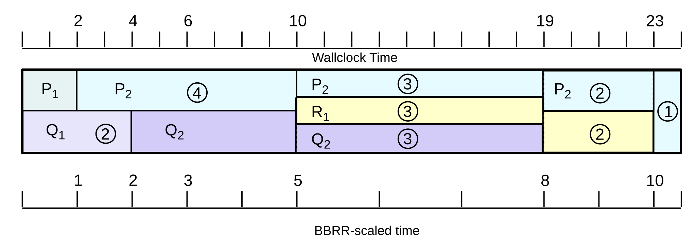
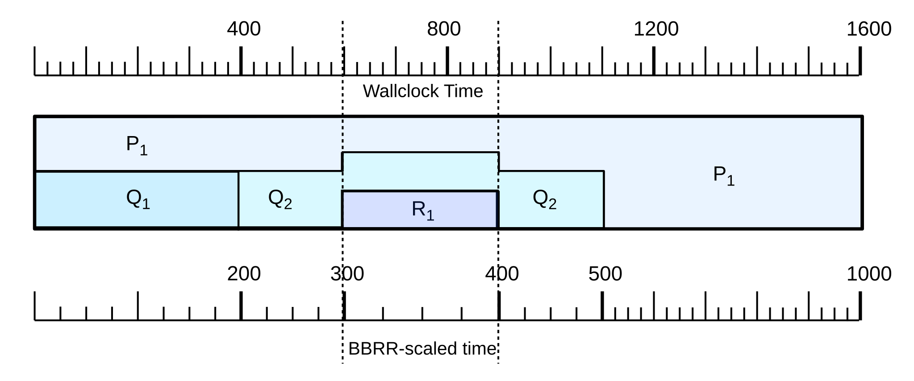
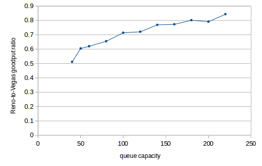

23 Queuing and Scheduling¶
Is giving all control of congestion to the TCP layer really the only option? As the Internet has evolved, so have situations in which we may not want routers handling all traffic on a first-come, first-served basis. Traffic with delay bounds – so-called real-time traffic, often involving either voice or video – is likely to perform much better with preferential service, for example; we will turn to this in 25 Quality of Service. But even without real-time traffic, we might be interested in guaranteeing that each of several customers gets an agreed-upon fraction of bandwidth, regardless of what the other customers are receiving. If we trust only to TCP Reno’s bandwidth-allocation mechanisms, and if one customer has one connection and another has ten, then the bandwidth received may also be in the ratio of 1:10. This may make the first customer quite unhappy.
The fundamental mechanism for achieving these kinds of traffic-management goals in a shared network is through queuing; that is, in deciding how the routers prioritize the traffic waiting in their queues. In this chapter and the following we will take a look at what router-based strategies are available in the toolbox. This chapter is mostly concerned with so-called fair queuing, in which the bandwidth assigned to idle senders is reapportioned to the other, active senders. The following chapter, 24 Token Bucket Rate Limiting, deals with bandwidth caps, in which there is no reapportioning of the bandwidth of idle senders. Finally, in 25 Quality of Service we will see how some of these ideas have been applied to develop distributed quality-of-service options.
Previously, in 20.1 A First Look At Queuing, we looked at FIFO queuing – both tail-drop and random-drop variants – and (briefly) at priority queuing. These are examples of queuing disciplines, a catchall term for anything that supports a way to accept and release packets. The RED gateway strategy (21.5.4 RED) could qualify as a separate queuing discipline, too, although one closely tied to FIFO.
Queuing disciplines provide tools for meeting administratively imposed constraints on traffic. Two senders, for example, might be required to share an outbound link equally, or in the proportion 60%-40%, even if one participant would prefer to use 100% of the bandwidth. Alternatively, a sender might be required not to send in bursts of more than 10 packets at a time.
Closely allied to the idea of queuing is scheduling: deciding what packets get sent when. Scheduling may take the form of sending someone else’s packets right now, or it may take the form of delaying packets that are arriving too fast.
While priority queuing is one practical alternative to FIFO queuing, we will also look at so-called fair queuing, in both flat and hierarchical forms. Fair queuing provides a straightforward strategy for dividing bandwidth among multiple senders according to preset percentages.
Also introduced here is the token-bucket mechanism, which can be used for traffic scheduling but also for traffic description.
Some of the material here – in particular that involving fair queuing and the Parekh-Gallager theorem – may give this chapter a more mathematical feel than earlier chapters. Mostly, however, this is confined to the proofs; the claims themselves are more straightforward.
23.1 Queuing and Real-Time Traffic¶
One application for advanced queuing mechanisms is to support real-time transport – that is, traffic with delay constraints on delivery.
In its original conception, the Internet was arguably intended for non-time-critical transport. If you wanted to place a digital phone call where every (or almost every) byte was guaranteed to arrive within 50 ms, your best bet might be to use the (separate) telephone network instead.
And, indeed, having an entirely separate network for real-time transport is definitely a workable solution. It is, however, expensive; there are many economies of scale to having just a single network. There is, therefore, a great deal of interest in figuring out how to get the Internet to support real-time traffic directly.
The central strategy for mixing real-time and bulk traffic is to use queuing disciplines to give the real-time traffic the service it requires. Priority queuing is the simplest mechanism, though the fair-queuing approach below offers perhaps greater flexibility.
We round out the chapter with the Parekh-Gallager theorem, which provides a precise delay bound for real-time traffic that shares a network with bulk traffic. All that is needed is that the real-time traffic satisfies a token-bucket specification and is assigned bandwidth guarantees through fair queuing; the volume of bulk traffic does not matter. This is exactly what is needed for real-time support.
While this chapter contains some rather elegant theory, it is not at all clear how much it is put into practice today, at least for real-time traffic at the ISP level. We will return to this issue in the following chapter. Real-time traffic management has seen widespread adoption in settings where traffic must be divided among multiple “guest users”: the hotel industry, for example, and perhaps for students. And most ISPs apply bandwidth caps to most of their customers. But we acknowledge that the more advanced forms of real-time traffic management have in general seen relatively limited adoption.
23.2 Traffic Management¶
Even if none of your traffic has real-time constraints, you still may wish to allocate bandwidth according to administratively determined percentages. For example, you may wish to give each of three departments an equal share of download (or upload) capacity, or you may wish to guarantee them shares of 55%, 35% and 10%. If you are an ISP, or the manager of a public Wi-Fi access point, you might wish to guarantee that everyone gets a roughly equal share of the available bandwidth, or, alternatively, that no one gets more bandwidth than they paid for.
If you want any unused capacity to be divided among the non-idle users, fair queuing is the tool of choice, though in some contexts it may benefit from cooperation from your ISP. If the users are more like customers receiving only the bandwidth they pay for, you might want to enforce flat caps even if some bandwidth thus goes unused; token-bucket filtering would then be the way to go. If bandwidth allocations are not only by department (or customer) but also by workgroup (or customer-specific subcategory), then hierarchical queuing offers the necessary control.
In general, network management divides into managing the hardware and managing the traffic; the tools in this chapter address this latter component. These tools can be used internally by ISPs and at the customer/ISP interconnection, but traffic management often makes good economic sense even when entirely contained within a single organization. Unlike support for real-time traffic, above, use of traffic management is widespread throughout the Internet, though often barely visible.
23.3 Priority Queuing¶
To get started, let us fill in the details for priority queuing, which we looked at briefly in 20.1.1 Priority Queuing. Here a given outbound interface can be thought of as having two (or more) physical queues representing different priority levels. Packets are placed into the appropriate subqueue based on some packet attribute, which might be an explicit priority tag, or which might be the packet’s destination socket. Whenever the outbound link becomes free and the router is able to send the next packet, it always looks first to the higher-priority queue; if it is nonempty then a packet is dequeued from there. Only if the higher-priority queue is empty is the lower-priority queue served.
Note that priority queuing is nonpreemptive: if a high-priority packet arrives while a low-priority packet is being sent, the latter is not interrupted. Only when the low-priority packet has finished transmission does the router again check its high-priority subqueue(s).
Priority queuing can lead to complete starvation of low-priority traffic, but only if the high-priority traffic consumes 100% of the outbound bandwidth. Often we are able to guarantee (for example, through admission control) that the high-priority traffic is limited to a designated fraction of the total outbound bandwidth.
23.4 Queuing Disciplines¶
As an abstract data type, a queuing discipline is simply a data structure that supports the following operations:
enqueue()dequeue()is_empty()
Note that the enqueue() operation includes within it a way to handle dropping a packet in the event that the queue is full. For FIFO queuing, the enqueue() operation needs only to know the correct outbound interface; for priority queuing enqueue() also needs to be told – or be able to infer – the packet’s priority classification.
We may also in some cases find it convenient to add a peek() operation to return the next packet that would be dequeued if we were actually to do that, or at least to return some important statistic (eg size or arrival time) about that packet.
As with FIFO and priority queuing, any queuing discipline is always tied to a specific outbound interface. In that sense, any queuing discipline has a single output.
On the input side, the situation may be more complex. The FIFO queuing discipline has a single input stream, though it may be fed by multiple physical input interfaces: the enqueue() operation puts all packets in the same physical queue. A queuing discipline may, however, have multiple input streams; we will call these classes, or subqueues, and will refer to the queuing discipline itself as classful. Priority queues, for example, have an input class for each priority level.
When we want to enqueue a packet for a classful queuing discipline, we must first invoke a classifier – possibly external to the queuing discipline itself – to determine the input class. (In the Linux documentation, what we have called classifiers are often called filters.) For example, if we wish to use a priority queue to give priority to VoIP packets, the classifier’s job is to determine which arriving packets are in fact VoIP packets (perhaps taking into account things like size or port number or source host), so as to be able to provide this information to the enqueue() operation. The classifier might also take into account pre-existing traffic reservations, so that packets that belong to flows with reservations get preferred service, or else packet tags that have been applied by some upstream router; we return to both of these in 25 Quality of Service.
The number and configuration of classes is often fixed at the time of queuing-discipline creation; this is typically the case for priority queues. Abstractly, however, the classes can also be dynamic; an example of this might be fair queuing (below), which often supports a configuration in which a separate input class is created on the fly for each separate TCP connection.
FIFO and priority queuing are both work-conserving, meaning that the associated outbound interface is not idle unless the queue is empty. A non-work-conserving queuing discipline might, for example, artificially delay some packets in order to enforce an administratively imposed bandwidth cap. Non-work-conserving queuing disciplines are often called traffic shapers; see 24 Token Bucket Rate Limiting below for an example. Because delayed packets have to be assigned transmission times, and kept somewhere until that time is reached, shaping tends to be more complex internally than other queuing mechanisms.
23.5 Fair Queuing¶
An important alternative to FIFO and priority is fair queuing. Where FIFO and its variants have a single input class and put all the incoming traffic into a single physical queue, fair queuing maintains a separate logical FIFO subqueue for each input class; we will refer to these as the per-class subqueues. Division into classes can be fine-grained – eg a separate class for each TCP connection – or coarse-grained – eg a separate class for each arrival interface, or a separate class for each designated internal subnet.
Suppose for a moment that all packets are the same size; this makes fair queuing much easier to visualize. In this (special) case – sometimes called Nagle fair queuing, and proposed in RFC 970 – the router simply services the per-class subqueues in round-robin fashion, sending one packet from each in turn. If a per-class subqueue is empty, it is simply skipped over. If all per-class subqueues are always nonempty this resembles time-division multiplexing (6.2 Time-Division Multiplexing). However, unlike time-division multiplexing if one of the per-class subqueues does become empty then it no longer consumes any outbound bandwidth. Recalling that all packets are the same size, the total bandwidth is then divided equally among the nonempty per-class subqueues; if there are K such queues, each will get 1/K of the output.
Fair queuing was extended to streams of variable-sized packets in [DKS89], [LZ89] and [LZ91]. Since then there has been considerable work in trying to figure out how to implement fair queuing efficiently and to support appropriate variants.
There are two broad approaches to fair queuing for variable-sized packets. The newer approach is to be concerned only with long-term bandwidth guarantees consistent with the assigned bandwidth fractions, as in 23.5.5 Deficit Round Robin and 23.5.6 Stochastic Fair Queuing. The original approaches, 23.5.3 Bit-by-bit Round Robin and 23.5.4 The GPS Model, provide these same bandwidth assurances, but they also make short-term delay guarantees: each time we choose the next packet to send, we choose the one that is the most “entitled” to be next, where a packet’s “entitlement” decreases as it gets larger or if its flow has sent recent previous packets. Specifically, packet-transmission choices are made according to the calculated “virtual finishing time”, 23.5.2 Virtual Finishing Times. We will sometimes refer to this original approach as real-time fair queuing.
Real-time fair queuing has potentially significant benefits for real-time traffic management. In particular, we can identify a specific delay guarantee; see 23.5.4.7 Finishing-Order Bound. That said, in today’s world where packet-transmission times might be one microsecond but an application’s packet-delay requirements might be several milliseconds – that is, thousands of times larger – real-time fair queuing is not always necessary.
23.5.1 Weighted Fair Queuing¶
An extension of fair queuing is weighted fair queuing (WFQ), where instead of giving each class an equal share, we assign each class a different percentage. For example, we might assign bandwidth percentages of 10%, 30% and 60% to three different departments. If all three subqueues are active, each gets the listed percentage. If the 60% subqueue is idle, then the others get 25% and 75% respectively, preserving the 1:3 ratio of their allocations. If the 10% subqueue is idle, then the other two subqueues get 33.3% and 66.7%.
If all packets are the same size, weighted fair queuing is, conceptually, a straightforward generalization of fair queuing, although the actual implementation details are sometimes nontrivial as the round-robin implementation above naturally yields equal shares. If we have two per-class subqueues that are to receive allocations of 40% and 60% (that is, in the ratio 2:3), and all packets are the same size, then we could implement WFQ by having one per-class subqueue send two packets and the other three. Or we might intermingle the two: class 1 sends its first packet, class 2 sends its first packet, class 1 sends its second, class 2 sends its second and its third. If the allocation is to be in the ratio 1:√2, the first sender might always send 1 packet while the second might send in a pattern – an irregular one – that averages √2: 1, 2, 1, 2, 1, 1, 2, ….
23.5.2 Virtual Finishing Times¶
In the real world, however, packets are far from being equal-sized, and mixing bulk and real-time traffic tends to make the size variation worse. In this case, fair queuing and weighted fair queuing are still possible but we have a little more work to do. This is an important practical case, as fair queuing is often used when one input class consists of small-packet real-time traffic, and should not be “penalized” for sending small packets. The strategy we will introduce first – the strategy of “real-time” fair queuing – is to transmit packets in order of a calculated virtual finishing time, which benefits flows with smaller packets and flows that have not sent packets recently. WFQ algorithms based on virtual finishing times are what were referred to above as real-time fair queuing. For the non-real-time approach, see 23.5.5 Deficit Round Robin.
We present two mechanisms for handling different-sized packets using virtual finishing times; the two are ultimately equivalent. The first – 23.5.3 Bit-by-bit Round Robin – is a straightforward extension of the round-robin idea, and the second – 23.5.4 The GPS Model – uses a “fluid” model of simultaneous packet transmission. Both mechanisms share the idea of a “virtual clock” that runs at a rate inversely proportional to the number of active subqueues; as we shall see, the point of varying the clock rate in this way is so that the virtual-clock time at which a given packet would theoretically finish transmission does not depend on activity in any of the other subqueues.
Finally, we present the quantum algorithm – 23.5.5 Deficit Round Robin – which is a more-efficient approximation to either of the exact algorithms, but which – being an approximation – no longer satisfies the same small-scale delay constraints.
For a straightforward generalization of the round-robin idea to different packet sizes, we start with a simplification: let us assume that each per-class subqueue is always active, where a subqueue is active if it is nonempty whenever the router looks at it.
If each subqueue is always active for the equal-sized-packets case, then packets are transmitted in order of increasing (or at least nondecreasing) cumulative data sent by each subqueue. In other words, every subqueue gets to send its first packet, and only then do we go on to begin transmitting second packets, and so on.
Still assuming each subqueue is always active, we can handle different-sized packets by the same idea. For packet P, let CP be the cumulative number of bytes that will have been sent by P’s subqueue as of the end of P. Then we simply need to send packets in nondecreasing order of CP.
In the diagram above, transmission in nondecreasing order of CP means transmission in left-to-right order of the vertical lines marking packet divisions, eg Q1, P1, R1, Q2, Q3, R2, …. This ensures that, in the long run, each subqueue gets an equal share of bandwidth.
A completely equivalent strategy, better suited for generalization to the case where not all subqueues are always active, is to send each packet in nondecreasing order of virtual finishing times, calculated for each packet with the assumption that only that packet’s subqueue is active. The virtual finishing time FP of packet P is equal to CP divided by the output bandwidth. We use finishing times rather than starting times because if one packet is very large, shorter packets in other subqueues that would finish sooner should be sent first.
23.5.2.1 A first virtual-finish example¶
As an example, suppose there are two subqueues, P and Q. Suppose further that a stream of 1001-byte packets P1, P2, P3, … arrives for P, and a stream of 400-byte packets Q1, Q2, Q3, … arrives for Q; each stream is steady enough that each subqueue is always active. Finally, assume the output bandwidth is 1 byte per unit time, and let T=0 be the starting point.
For the P subqueue, the virtual finishing times calculated as above would be P1 at 1001, P2 at 2002, P3 at 3003, etc; for Q the finishing times would be Q1 at 400, Q2 at 800, Q3 at 1200, etc. So the order of transmission of all the packets together, in increasing order of virtual finish, will be as follows:
| Packet | virtual finish | actual finish |
|---|---|---|
| Q1 | 400 | 400 |
| Q2 | 800 | 800 |
| P1 | 1001 | 1801 |
| Q3 | 1200 | 2201 |
| Q4 | 1600 | 2601 |
| Q5 | 2000 | 3001 |
| P2 | 2002 | 4002 |
For each packet we have calculated in the table above its virtual finishing time, and then its actual wallclock finishing time assuming packets are transmitted in nondecreasing order of virtual finishing time (as shown).
Because both subqueues are always active, and because the virtual finishing times assumed each subqueue received 100% of the output bandwidth, in the long run the actual finishing times will be about double the virtual times. This, however, is irrelevant; all that matters is the relative virtual finishing times.
23.5.2.2 A second virtual-finish example¶
For the next example, however, we allow a subqueue to be idle for a while and then become active. In this situation virtual finishing times do not work quite so well, at least when based directly on wallclock time. We return to our initial simplification that all packets are the same size, which we take to be 1 unit; this allows us to apply the round-robin mechanism to determine the transmission order and compare this to the virtual-finish order. Assume there are three queues P, Q and R, and P is empty until wallclock time 20. Q is constantly busy; its Kth packet QK, starting with K=1, has virtual finishing time FK = K.
For the first case, assume R is completely idle. When P’s first packet P1 arrives at time 20, its virtual finishing time will be 21. At time 20 the head packet in Q will be Q21; the two packets therefore have identical virtual finishing times. And, encouragingly, under round-robin queue service P1 and Q21 will be sent in the same round.
For the second case, however, suppose R is also constantly busy. Up until time 20, Q and R have each sent 10 packets; their next packets are Q11 and R11, each with a virtual finishing time of T=11. When P’s first packet arrives at T=20, again with virtual finishing time 21, under round-robin service it should be sent in the same round as Q11 and R11. Yet their virtual finishing times are off by a factor of about two; queue P’s stretch of inactivity has left it far behind. Virtual finishing times, as we have been calculating them so far, simply do not work.
The trick, as it turns out, is to measure elapsed time not in terms of packet-transmission times (ie wallclock time), but rather in terms of rounds of round-robin transmission. This amounts to scaling the clock used for measuring arrival times; counting in rounds rather than packets means that we run this clock at rate 1/N when N subqueues are active. If we do this in case 1, with N=1, then the finishing times are unchanged. However, in case 2, with N=2, packet P1 arrives after 20 time units but only 10 rounds; the clock runs at half rate. Its calculated finishing time is thus 11, exactly matching the finishing times of the two long-queued packets Q11 and R11 with which P1 shares a round-robin transmission round.
We formalize this in the next section, extending the idea to include both variable-sized packets and sometimes-idle subqueues. Note that only the clock that measures arrival times is scaled; we do not scale the calculated transmission times.
23.5.3 Bit-by-bit Round Robin¶
Imagine sending a single bit at a time from each active input subqueue, in round-robin fashion. While not directly implementable, this certainly meets the goal of giving each active subqueue equal service, even if packets are of different sizes. We will use bit-by-bit round robin, or BBRR, as a way of modeling packet-finishing times, and then, as in the previous example, send the packets the usual way – one full packet at a time – in order of increasing BBRR-calculated virtual finishing times.
It will sometimes happen that a larger packet is being transmitted at the point a new, shorter packet arrives for which a smaller finishing time is computed. The current transmission is not interrupted, though; the algorithm is non-preemptive.
The trick to making the BBRR approach workable is to find an “invariant” formulation of finishing time that does not change as later packets arrive, or as other subqueues become active or inactive. To this end, taking the lead from the example of the previous section, we define the “rounds counter” R(t), where t is the time measured in units of the transmission time for one bit. When there are any active (nonempty or currently transmitting) input subqueues, R(t) counts the number of round-robin 1-bit cycles that have occurred since the last time all the subqueues were empty. If there are K active input subqueues, then R(t) increments by 1 as t increments by K; that is, R(t) grows at rate 1/K.
An important attribute of R(t) is that, if a packet of size S bits starts transmission via BBRR at R0 = R(t0), then it will finish when R(t) = R0+S, regardless of whether any other input subqueues become active or become empty. For any packet actively being sent via BBRR, R(t) increments by 1 for each bit of that packet sent. If for a given round-robin cycle there are K subqueues active, then K bits will be sent in all, and R(t) will increment by 1.
To calculate the virtual BBRR finishing time of a packet P, we first record RP = R(tP) at the moment of arrival. We now compute the BBRR-finishing R-value FP as follows; we can think of this as a “time” measured via the rounds counter R(t). That is, R(t) represents a “virtual clock” that happens sometimes to run slow. Let S be the size of the packet P in bits. If P arrived on a previously empty input subqueue, then its BBRR transmission can begin immediately, and so its finishing R-value FP is simply RP+S. If the packet’s subqueue was nonempty, we look up the (future) finishing R-value of the packet immediately ahead of P in its subqueue, say Fprev; the finishing R-value of P is then FP = Fprev + S. This is sometimes described as:
Start = max(R(now), Fprev)FP = Start + S (S = packet size, measured in bits)
As each new packet P arrives, we calculate its BBRR-finishing R-value FP, and then send packets the conventional one-packet-at-a-time way in increasing order of FP. As stated above, FP will not change if other subqueues empty or become active, thus changing the rate of the rounds-counter R(t).
The router maintaining R(t) does not have to increment it on every bit; it suffices to update it whenever a packet arrives or a subqueue becomes empty. If the previous value of R(t) was Rprev, and from then to now exactly K subqueues were nonempty, and M bit-times have elapsed according to the wall clock, then the current value of R(t) is Rprev + M/K.
23.5.3.1 BBRR example¶
As an example, suppose the fair queuing router has three input subqueues P, Q and R, initially empty. The following packets arrive at the wall-clock times shown.
| Packet | Queue | Size | Arrival time, t |
|---|---|---|---|
| P1 | P | 1000 | 0 |
| P2 | P | 1000 | 0 |
| Q1 | Q | 600 | 800 |
| Q2 | Q | 400 | 800 |
| Q3 | Q | 400 | 800 |
| R1 | R | 200 | 1200 |
| R2 | R | 200 | 2100 |
At t=0, we have R(t)=0 and we assign finishing R-values F(P1)=1000 to P1 and F(P2) = F(P1)+1000 = 2000 to P2. Transmission of P1 begins.
When the three Q packets arrive at t=800, we have R(t)=800 as well, as only one subqueue has been active. We assign finishing R-values for the newly arriving Q1, Q2 and Q3 of F(Q1) = 800+600 = 1400, F(Q2) = 1400+400 = 1800, and F(Q3) = 1800+400 = 2200. At this point, BBRR begins serving two subqueues, so the R(t) rate is cut in half.
At t=1000, transmission of packet P1 is completed; R(t) is 800 + 200/2 = 900. The smallest finishing R-value on the books is F(Q1), at 1400, so Q1 is the second packet transmitted. Q1’s real finishing time will be t = 1000+600 = 1600.
At t=1200, R1 arrives; transmission of Q1 is still in progress. R(t) is 800 + 400/2 = 1000; we calculate F(R1) = 1000 + 200 = 1200. Note this is less than the finishing R-value for Q1, which is currently transmitting, but Q1 is not preempted. At this point (t=1200, R(t)=1000), the R(t) rate falls to 1/3.
At t=1600, Q1 has finished transmission. We have R(t) = 1000 + 400/3 = 1133. The next smallest finishing R-value is F(R1) = 1200 so transmission of R1 commences.
At t=1800, R1 finishes. We have R(1800) = R(1200) + 600/3 = 1000 + 200 = 1200 (3 subqueues have been busy since t=1200). Queue R is now empty, so the R(t) rate rises from 1/3 to 1/2. The next smallest finishing R-value is F(Q2)=1800, so transmission of Q2 begins. It will finish at t=2200.
At t=2100, we have R(t) = R(1800) + 300/2 = 1200 + 150 = 1350. R2 arrives and is assigned a finishing time of F(R2) = 1350 + 200 = 1550. Again, transmission of Q2 is not preempted even though F(R2) < F(Q2). The R(t) rate again falls to 1/3.
At t=2200, Q2 finishes. R(t) = 1350 + 100/3 = 1383. The next smallest finishing R-value is F(R2)=1550, so transmission of R2 begins.
At t=2400, transmission of R2 ends. R(t) is now 1350 + 300/3 = 1450. The next smallest finishing R-value is F(P2) = 2000, so transmission of P2 begins. The R(t) rate rises to 1/2, as queue R is again empty.
At t=3400, transmission of P2 ends. R(t) is 1450 + 1000/2 = 1950. The only remaining unsent packet is Q3, with F(Q3)=2200. We send it.
At t=3800, transmission of Q3 ends. R(t) is 1950 + 400/1 = 2350.
To summarize:
| Packet | send-time, wall clock t | calculated finish R-value | R-value when sent | R-value at finish |
|---|---|---|---|---|
| P1 | 0 | 1000 | 0 | 900 |
| Q1 | 1000 | 1400 | 900 | 1133 |
| R1 | 1600 | 1200* | 1133 | 1200 |
| Q2 | 1800 | 1800 | 1200 | 1383 |
| R2 | 2200 | 1550* | 1383 | 1450 |
| P2 | 2400 | 2000 | 1450 | 1950 |
| Q3 | 3400 | 2200 | 1950 | 2350 |
Packets arrive, begin transmission and finish in “real” time. However, the number of queues active in real time affects the rate of the rounds-counter R(t); this value is then attached to each packet as it arrives as its virtual finishing time, and determines the order of packet transmission.
The change in R-value from start to finish exactly matches the packet size when the packet is “virtually sent” via BBRR. When the packet is sent as an indivisible unit, as in the table above, the change in R-value is usually much smaller, as the R-clock runs slower whenever at least two subqueues are in use.
The calculated-finish R-values are not in fact increasing, as can be seen at the starred (*) values. This is because, for example, R1 was not yet available when it was time to send Q1.
Computationally, maintaining the R-value counter is inconsequential. The primary performance issue with BBRR simulation is the need to find the smallest R-value whenever a new packet is to be sent. If n is the number of packets waiting to be sent, then we can do this in time O(log(n)) by keeping the R-values sorted in an appropriate data structure.
The BBRR approach assumes equal weights for each subqueue; this does not generalize completely straightforwardly to weighted fair queuing as the number of subqueues cannot be fractional. If there are two queues, one which is to have weight 40% and the other 60%, we could use BBRR with five subqueues, two of which (2/5) are assigned to the 40%-subqueue and the other three (3/5) to the 60% subqueue. But this becomes increasingly awkward as the fractions become less simple; the GPS model, next, is a better option.
23.5.4 The GPS Model¶
An almost-equivalent model to BBRR is the generalized processor sharing model, or GPS; it was first developed as an application to CPU scheduling. In this approach we imagine the packets as liquid, and the outbound interface as a pipe that has a certain total capacity. The head packets from each subqueue are all squeezed into the pipe simultaneously, each at its designated fractional rate. The GPS model is essentially an “infinitesimal” variant of BBRR. The GPS model has an advantage of generalizing straightforwardly to weighted fair queuing.
Other fluid models have also been used in the analysis of networks, eg for the study of TCP, though we do not consider these here. See [MW00] for one example.
For the GPS model, assume there are N input subqueues, and the ith subqueue, 0≤i<N, is to receive fraction 𝛼i > 0, where 𝛼0+𝛼1+ … + 𝛼N−1=1. If at some point a set A of input subqueues is active , say A = {0,2,4}, then subqueue 0 will receive fraction 𝛼0/(𝛼0+𝛼2+𝛼4), and subqueues 2 and 4 similarly. The router forwards packets from each active subqueue simultaneously, each at its designated rate.
The GPS model (and the BBRR model) provides an ideal degree of isolation between input flows: each flow is insulated from any delay due to packets on competing flows. The ith flow receives bandwidth of at least 𝛼i and packets wait only for other packets belonging to the same flow. When a packet arrives for an inactive subqueue, forwarding begins immediately, interleaved with any other work the router is doing. Traffic on other flows can reduce the real rate of a flow, but not its virtual rate.
While GPS is convenient as a model, it is even less implementable, literally, than BBRR. As with BBRR, though, we can use the GPS model to determine the order of one-packet-at-a-time transmission. As each real packet arrives, we calculate the time it would finish, if we were using GPS. Packets are then transmitted under WFQ one at a time, in order of increasing GPS finishing time.
In lieu of the BBRR rounds counter R(t), a virtual clock VC(t) is used that runs at an increased rate 1/𝛼 ≥ 1 where 𝛼 is the sum of the 𝛼i for the active subqueues. That is, if subqueues 0, 2 and 4 are active, then the VC(t) clock runs at a rate of 1/(𝛼0+𝛼2+𝛼4). If all the 𝛼i are equal, each to 1/N, then VC(t) always runs N times faster than R(t), and so VC(t) = N×R(t); the VC clock runs at wallclock speed when all input subqueues are active and speeds up as subqueues become idle.
For any one active subqueue i, the GPS rate of transmission relative to the virtual clock (that is, in units of bits per virtual-second) is always equal to fraction 𝛼i of the full output-interface rate. That is, if the output rate is 10 Mbps and an active flow has fraction 𝛼 = 0.4, then it will always transmit at 4 bits per virtual microsecond. When all the subqueues are active, and the VC clock runs at wallclock speed, the flow’s actual rate will be 4 bits/µsec. When the subqueue is active alone, its speed measured by a real clock will be 10 bit/µsec but the virtual clock will run 2.5 times faster so 10 bits/µsec is 10 bits per 2.5 virtual microseconds, or 4 bits per virtual microsecond.
To make this claim more precise, let A be the set of active queues, and let 𝛼 again be the sum of the 𝛼j for j in A. Then VC(t) runs at rate 1/𝛼 and active subqueue i’s data is sent at rate 𝛼i/𝛼 relative to wallclock time. Subqueue i’s transmission rate relative to virtual time is thus (𝛼i/𝛼)/(1/𝛼) = 𝛼i.
As other subqueues become inactive or become active, the VC(t) rate and the actual transmission rate move in lockstep. Therefore, as with BBRR, a packet P of size S on subqueue i that starts transmission at virtual time T will finish at T + S/(r×𝛼i) by the VC clock, where r is the actual output rate of the router, regardless of what is happening in the other subqueues. In other words, VC-calculated finishing times are invariant.
To round out the calculation of finishing times, suppose packet P of size S arrives on an active GPS subqueue i. The previous packet in that subqueue will have finishing time Fprev, and that will become P’s start time. If P arrives on an inactive subqueue, GPS allows it to begin transmitting immediately. Either way, as with BBRR, P’s start time is Pstart = max(VC(now), Fprev), and its finishing time on the VC clock is FP = Pstart + S/(r×𝛼i). In one expression, this finishing time is
FP = max(VC(now), Fprev) + S/(r×𝛼i)
In 23.8.1.1 WFQ with non-FIFO subqueues below, we will consider WFQ routers that, as part of a hierarchy, are in effect only allowed to transmit intermittently. In such a case, the virtual clock should be suspended whenever output is blocked. This is perhaps easiest to see for the BBRR scheduler: the rounds-counter RR(t) is to increment by 1 for each bit sent by each active subqueue. When no bits may be sent, the clock should not increase.
As an example of what happens if this is not done, suppose R has two subqueues A and B; the first is empty and the second has a long backlog. R normally processes one packet per second. At T=0/VC=0, R’s output is suspended. Packets in the second subqueue b1, b2, b3, … have virtual finishing times 1, 2, 3, …. At T=10, R resumes transmission, and packet a1 arrives on the A subqueue. If R’s virtual clock had been suspended for the interval 0≤T≤10, a1 would be assigned finishing time T=1 and would have priority comparable to b1. If R’s virtual clock had continued to run, a1 would be assigned finishing time T=11 and would not be sent until b11 reached the head of the B queue.
23.5.4.1 The WFQ scheduler¶
To schedule actual packet transmission under weighted fair queuing, we calculate upon arrival each packet’s virtual-clock finishing time assuming it were to be sent using GPS. Whenever the sender is ready to start transmission of a new packet, it selects from the available packets the one with the smallest GPS-finishing-time value. By the argument above, a packet’s GPS finishing time does not depend on any later arrivals or idle periods on other subqueues. As with BBRR, small but later-arriving packets might have smaller virtual finishing times, but a packet currently being transmitted will not be interrupted.
23.5.4.2 Finishing Order under GPS and WFQ¶
We now look at the order in which packets finish transmission under GPS versus WFQ. The goal is to provide in 23.5.4.7 Finishing-Order Bound a tight bound on how long packets may have to wait under WFQ compared to GPS. We emphasize again:
- GPS finishing time: the theoretical finishing time based on parallel multi-packet transmissions under the GPS model
- WFQ finishing time: the real finishing time assuming packets are sent sequentially in increasing order of calculated GPS finishing time
One way to view this is as a quantification of the informal idea that WFQ provides a natural priority for smaller packets, at least smaller packets sent on previously idle subqueues. This is quite separate from the bandwidth guarantee that a given small-packet input class might receive; it means that small packets are likely to leapfrog larger packets waiting in other subqueues. The quantum algorithm, below, provides long-term WFQ bandwidth guarantees but does not provide the same delay assurances.
First, if all subqueues are always active (or if a fixed subset of subqueues is always active), then packets finish under WFQ in the same order as they do under GPS. This is because under WFQ packets are transmitted in the order of GPS finishing times according the virtual clock, and if all subqueues are always active the virtual clock runs at a rate identical to wallclock time (or, if a fixed subset of subqueues is always active, at a rate proportional to wallclock time).
If all subqueues are always active, we can assume that all packets were in their subqueues as of time T=0; the finishing order is the same as long as each packet arrived before its subqueue went inactive.
Finally, if all subqueues are always active then each packet finishes at least as early under WFQ as under GPS. To see this, let Pj be the jth packet to finish, under either GPS or WFQ. At the time when Pj finishes under WFQ, the router R will have devoted 100% of its output bandwidth exclusively to P1 through Pj. When Pj finishes under GPS, R will also have transmitted P1 through Pj, and may have transmitted fractions of later packets as well. Therefore, the Pj finishing time under GPS cannot be earlier.
The finishing order and the relative GPS/WFQ finishing times may change, however, if – as will usually be the case – some subqueues are sometimes idle; that is, if packets sometimes “arrive late” for some subqueues.
23.5.4.3 GPS Example 1¶
As a first example we return to the scenario of 23.5.2.1 A first virtual-finish example. The router’s two subqueues are always active; each has an allocation of 𝛼=50%. Packets P1, P2, P3, …, all of size 1001, wait in the first queue; packets Q1, Q2, Q3, …, all of size 400, wait in the second queue. Output bandwidth is 1 byte per unit time, and T=0 is the starting point.
The router’s virtual clock runs at wallclock speed, as both subqueues are always active. If Fi represents the virtual finishing time of Ri, then we now calculate Fi as Fi-1 + 400/𝛼 = Fi-1 + 800. The virtual finishing times of P1, P2, etc are similarly at multiples of 2002.
| Packet | virtual finish | actual finish time |
|---|---|---|
| Q1 | 800 | 400 |
| Q2 | 1600 | 800 |
| P1 | 2002 | 1801 |
| Q3 | 2400 | 2201 |
| Q4 | 3200 | 2601 |
| Q5 | 4000 | 3001 |
| P2 | 4004 | 4002 |
In the table above, the “virtual finish” column is simply double that of the BBRR version, reflecting the fact that the virtual finishing times are now scaled by a factor of 1/𝛼 = 2. The actual finish times are identical to what we calculated before.
Note that, in every case, the actual WFQ finish time is always less than or equal to the virtual GPS finish time.
23.5.4.4 GPS Example 2¶
If the router has only a single active subqueue, with share 𝛼 and packets P1, P2, P3, …, then the calculated virtual-clock packet finishing times will be equal to the time on the virtual clock at the point of actual finish, at least if this has been the case since the virtual clock last restarted at T=VC=0. Let r be the output rate of the router, let S1, S2, S3 be the sizes of the packets and let F1, F2, F3 be their virtual finishing times with F0=0. Then
Fi = Fi-1 + Si/(r𝛼) = S1/(r𝛼) + … + Si/(r𝛼)
The ith packet’s actual finishing time Ai is (S1 + … + Si)/r, which is 𝛼×Fi. But the virtual clock runs fast by a factor of 1/𝛼, so the actual finishing time on the virtual clock is Ai/𝛼 = Fi.
23.5.4.5 GPS Example 3¶
The next example illustrates a smaller but later-arriving packet, in this case Q2, that finishes ahead of P2 under GPS but not under WFQ. P2 can be said to leapfrog Q2 and R1 under WFQ.
Suppose packets P1, Q1, P2, Q2 and R1 arrive at a router at the following times T, and with the following lengths L. The output bandwidth is 1 length unit per time unit; that is, r=1. The total number of length units is 24. Each subqueue is allocated an equal share of the bandwidth; eg 𝛼=1/3.
| subqueue 1 | subqueue 2 | subqueue 3 |
|---|---|---|
| P1: T=0, L=1 | Q1: T=0, L=2 | R1: T=10, L=5 |
| P2: T=2, L=10 | Q2: T=4, L=6 |
Under WFQ, we send P1 and then Q1; Q1 is second because its finishing time is later. When Q1 finishes the wallclock time is T=3. At this point, P2 is the only packet available to send; it finishes at T=13.
Up until T=10, we have two packets in progress under GPS (because Q1 finishes under GPS at T=4 and Q2 arrives at T=4), and so the GPS clock runs at rate 3/2 of wallclock time and the BBRR clock runs at rate 1/2 of wallclock time. At T=4, when Q2 arrives, the BBRR clock is at 2 and the VC clock is at 6 and we calculate the BBRR finishing time as 2+6=8 and the GPS finishing time as 6+6/(1/3) = 24. At T=10, the BBRR clock is at 5 and the GPS clock is 15. R1 arrives then; we calculate its BBRR finishing time as 5+5=10 and its GPS finishing time as 15+5/𝛼 = 30.
Because Q2 has the earlier virtual-clock finishing time, WFQ sends it next after P2, followed by R1.
Here is a diagram of transmission under GPS. The chart itself is scaled to wallclock times. The BBRR clock is on the scale below; the VC clock always runs three times faster.

The circled numbers represent the size of the portion of the packet sent in the intervals separated by the dotted vertical lines; for each packet, these add up to the packet’s total size.
Note that, while the transmission order under WFQ is P1, Q1, P2, Q2, R1, the finishing order under GPS is P1, Q1, Q2, R1, P2. That is, P2 managed to leapfrog Q2 and R1 under WFQ by the simple expedient of being the only packet available for transmission at T=3.
23.5.4.6 GPS Example 4¶
As a second example of leapfrogging, suppose we have the following arrivals; in this scenario, the smaller but later-arriving R1 finishes ahead of P1 and Q2 under GPS, but not under WFQ.
| subqueue 1 | subqueue 2 | subqueue3 |
|---|---|---|
| P1: T=0, L=1000 | Q1: T=0, L=200 | R1: T=600, L=100 |
| Q2: T=0, L=300 |
The following diagram shows how the packets shared the link under GPS over time. As can be seen, the GPS finishing order is Q1, R1, Q2, P1.

Under WFQ, the transmission order is Q1, Q2, P1, R1, because when Q2 finishes at T=500, R1 has not yet arrived.
23.5.4.7 Finishing-Order Bound¶
These examples bring us to the following delay-bound claim, due to Parekh and Gallager [PG93] (see also [PG94]); we will make use of it below in 24.12 Parekh-Gallager Theorem. It is arguably the deepest part of the Parekh-Gallager theorem.
Claim: For any packet P, the wallclock finishing time of P at a router R under WFQ cannot be later than the wallclock finishing time of P at R under GPS by more than the time R needs to transmit the maximum-sized packet that can appear.
Expressed symbolically, if FWFQ and FGPS are the finishing times for P under WFQ and GPS, R’s outbound transmission rate is r, and Lmax is the maximum packet size that can appear at R, then
FWFQ ≤ FGPS + Lmax/r
This is the best possible bound; Lmax/r is the time packet P must wait if it has arrived an instant too late and another packet of size Lmax has started instead.
Note that, if a packet’s subqueue is inactive, the packet starts transmitting immediately upon arrival under GPS; however, GPS may send the packet relatively slowly.
To prove this claim, let us number the packets P1 through Pk in order of WFQ transmission, starting from the most recent point when at least one subqueue of the router became active. (Note that these packets may be spread over multiple input subqueues.) For each i, let Fi be the finishing time of Pi under WFQ, let Gi be the finishing time of Pi under GPS, and let Li be the length of Pi; note that, for each i, Fi+1 = Li+1/r + Fi.
If Pk finishes after P1 through Pk-1 under GPS, then the argument above (23.5.4.2 Finishing Order under GPS and WFQ) for the all-subqueues-active case still applies to show Pk cannot finish earlier under GPS than it does under WFQ; that is, we have Fk ≤ Gk.
Otherwise, some packet Pi with i<k must finish after Pk under GPS; Pi has leapfrogged Pk under WFQ, presumably because Pk was late in arriving. Let Pm be the most recent (largest m<k) such leapfrogger packet, so that Pm finishes after Pk under GPS but Pm+1 through Pk-1 finish earlier (or are tied); this was illustrated above in 23.5.4.5 GPS Example 3 for k=5 and m=3.
We next claim that none of the packets Pm+1 through Pk could have yet arrived at R at the time Tstart when Pm began transmission under WFQ. If some Pi with i>m were present at time Tstart, then the fact that it is transmitted after Pm under WFQ would imply that the calculated GPS finishing time came after that of Pm. But, as we argued earlier, calculated virtual-clock GPS finishing times are always the actual virtual-clock GPS finishing times, and we cannot have Pi finishing both ahead of Pm and behind it.
Recalling that Fm is the finishing time of Pm under WFQ, the time Tstart above is simply Fm - Lm/r. Between Tstart and Gk, all the packets Pm+1 through Pk must arrive and then, under GPS, depart. The absolute minimum time to send these packets under GPS is the WFQ time for end-to-end transmission, which is (Lm+1 + .. + Lk)/r = Fk - Fm. Therefore we have
Gk - Tstart ≥ Fk - FmGk - (Fm - Lm/r) ≥ Fk - FmFk ≤ Gk + Lm/r ≤ Gk + Lmax/r
The last line represents the desired conclusion.
23.5.5 Deficit Round Robin¶
The BBRR approach has cost O(log n), where n is the number of packets waiting, as outlined earlier. One simple though approximate alternative that has O(1) performance, introduced in [SV96], is to assign to each input subqueue a numeric quantum, proportional to that subqueue’s bandwidth share. Each subqueue will also maintain a deficit representing the cumulative amount of data it was granted permission to send in the past, but wasn’t able to because the next packet was too large. The deficit will always be smaller than the size of the subqueue’s head packet. When the subqueue is idle (and so there is no head packet), the deficit is always set to zero.
At each round, a subqueue will be granted permission to send one additional quantum’s worth of data; that is, the quantum will be added to the subqueue’s deficit. If this new deficit is larger than the size of the head packet, then that packet can be sent, and possibly other packets as well. The sizes of the packets sent are then subtracted from the deficit, which will now be smaller than the size of the new head packet, and the next subqueue gets a turn.
Often the quantum is a number of bytes at least as large as the network MTU; in this case, each subqueue will be permitted to send at least one packet on each round. This is not a requirement, however; often the quantum is small enough that it takes many rounds to accumulate enough of a deficit to send a packet.
One cost of the quantum approach is that the elegant delay bound of 23.5.4.7 Finishing-Order Bound no longer holds. In fact, a sender may be forced to wait for all other senders each to send a full quantum, even if the sender has only a small packet. In particular, deficit round robin is not the same as BBRR, even if the deficit is one bit. The subqueues are always granted the opportunity to send in the round-robin order, rather than in the order of virtual finishing time. See exercises 3.0 and 5.5.
If the quantum is 1000 bytes, the deficit is zero, and we have two 600-byte packets in the current subqueue, then the first of the packets is sent and the deficit is updated to 400. If instead we have two 400-byte packets then the deficit is 0 as sending the two 400-byte packets empties the subqueue. If the quantum is 1000 bytes and a steady stream of 600-byte packets arrives on one subqueue, they are sent as follows
| round | quantum + prev deficit | packets sent | new deficit |
|---|---|---|---|
| 1 | 1000 | 1 | 400 |
| 2 | 1400 | 2,3 | 200 |
| 3 | 1200 | 4,5 | 0 |
In three rounds the subqueue has been allowed to send 5×600 = 3000 bytes, which is exactly 3 quantums.
We can implement weighted fair queuing using the quantum algorithm by adjusting the quantum sizes in proportion to the weights; that is, if the weights are 40% and 60% then the respective quanta might be 1000 bytes and 1500 bytes. If the quantums are Q1, Q2, …, Qn, and if all subqueues are always nonempty, then in the long run the ith subqueue will get a share of the bandwidth equal to Qi/(Q1+Q2+ … +Qn), just as with other implementations of fair queuing.
23.5.6 Stochastic Fair Queuing¶
Stochastic fair queuing ([McK90]) is a different kind of approximation to fair queuing. The ideal is to give each individual TCP connection through a router its own fair queuing class, so that no connection has an incentive to keep more than the minimum number of packets in the queue. However, managing so many separate (and dynamically changing) input classes is computationally intensive. Instead, a hash function is used to put each TCP connection (as identified by its socketpair) into one of several buckets (the current default bucket count in the Linux implementation is 1024). The buckets are then used as the fair queuing input queues.
If two connections hash to the same bucket, each will get only half the bandwidth to which it is entitled. Therefore the hash function has some additional parameters that allow it to be perturbed at regular intervals; after perturbation, socketpairs that formerly hashed to the same bucket likely now will not.
The Linux implementation of stochastic fair queuing, known as sfq, uses the quantum-based deficit round robin algorithm, above. The different subqueues ultimately share a common pool of buffer space. If a packet arrives when no more space is available, the last packet from the fullest subqueue is dropped. This rewards flows that hold their queue utilization to modest levels.
23.6 Applications of Fair Queuing¶
As we saw in the Queue-Competition Rule in 20.2.2 Example 2: router competition, if a bottleneck router uses FIFO queuing then it pays a sender, in terms of the bandwidth it receives, to keep as many packets as possible in the queue. Fair queuing, however, can behave quite differently. If fair queuing is used with a separate class for each connection, this “greediness” benefit evaporates; a sender need only keep its per-class queue nonempty in order to be guaranteed its assigned share. Senders can limit their queue utilization to one or two packets without danger of being crowded out by competing traffic.
As another application of fair queuing, suppose we have three web servers, A, B and C, to which we want to give equal shares at sending along a 6 Mbps link; all three reach the link through router R. One way would be to have R restrict them each to 2 Mbps, but that is not work-conserving: if one server is idle then its share goes unused. Fair queuing offers a better approach: if all three are busy, each gets 2 Mbps; if two are busy then each gets 3 Mbps, and if only one is busy it gets 6 Mbps. ISPs can also use this strategy internally whenever they have several flows competing for one outbound link.
Unfortunately, this strategy does not work quite as well with three receivers. Suppose now A, B and C are three pools of users (eg three departments), and we want to give them each equal shares of an inbound 6 Mbps link:
Inbound fair queuing could be used at the ISP (upstream) end of the connection, where the three flows would be identified by their destinations. But the ISP router is likely not ours to play with. Once the three flows arrive at R, it is too late to allocate shares; there is nothing to do but deliver the traffic to A, B and C respectively. We will return to this scenario below in 24.4.1 Applications of Token Bucket.
Note that for these kinds of applications we need to be able to designate administratively how packets get classified into different input classes. The automatic classification of stochastic fair queuing, above, will not help here.
23.6.1 Fair Queuing and Bufferbloat¶
Fair Queuing provides an alternative approach, at least theoretically, to the bufferbloat problem (21.5.1 Bufferbloat). In 21.5 Active Queue Management we discussed how FIFO routers can reduce excessive queue utilization. However, if a router abandoned FIFO and instead awarded each flow its own fair-queuing subqueue, there would no longer be an incentive for a TCP implementation to, like TCP Reno and TCP Cubic (22.15 TCP CUBIC), grab as much queue capacity as possible. The queue-competition rule of 20.2.2 Example 2: router competition would simply no longer apply. N connections through the router would each receive 1/N of the bottleneck bandwidth, as long as each flow kept at least one packet in its subqueue at all times (WFQ might change the proportions, but not the principle).
If end users could count on fair queuing in routers, the best transit choice would become something like TCP Vegas (22.6 TCP Vegas), which keeps a minimum number of packets in the bottleneck queue. TCP Vegas is largely unused today because it competes poorly in FIFO queues with TCP Reno (22.6.1 TCP Vegas versus TCP Reno), but all that would change with fair queuing. Depending on the maximum subqueue capacity, TCP Reno users in this new routing regime might receive as little as 75% of their “fair share” through the bottleneck router (19.7 TCP and Bottleneck Link Utilization), but the link itself would never go idle as long as there were active TCP Vegas connections. Real-time UDP flows (perhaps carrying VoIP traffic) would also see negligible queuing delay, even in the face of large file transfers going on in parallel.
As a practical matter, a fair-queuing subqueue for each separate TCP connection is expensive. A reasonable compromise, however, might be to use stochastic fair queuing, or SFQ (23.5.6 Stochastic Fair Queuing). A drop policy of dropping from the fullest subqueue further penalizes TCP Reno and TCP Cubic, and favors TCP Vegas.
In 31.5 TCP Reno versus TCP Vegas there is a graph of the relative bandwidth utilization of TCP Reno versus TCP Vegas. In that graph, TCP Reno outperforms Vegas by at least fourfold for much of the range, and achieves tenfold greater throughput with the largest queue capacities. Here, by comparison, is a chart when the bottleneck queue is changed from FIFO to SFQ:

In this graph, TCP Vegas always gets more bandwidth than TCP Reno, though for large queue capacities Reno comes within 80%. The TCP Reno connection still faces bufferbloat problems, but the TCP Vegas connection is unaffected.
(In the ns-2 simulator, SFQ’s total queue capacity is set with, eg, Queue/SFQ set maxqueue_ 100.)
Of course, most routers do not enable fair queuing, stochastic or otherwise, at least not at the level of individual flows. So Reno and Cubic still win, and Vegas remains an unfruitful choice. Fair queuing costs money, as there is more packet processing involved. Compounding this is the chicken-and-egg problem: if one ISP did implement fair queuing, end users would stick to TCP Reno and TCP Cubic because they worked best everywhere else, and the benefits of using protocols like TCP Vegas would go unrealized.
23.7 Hierarchical Queuing¶
Any queuing discipline with multiple input classes can participate in a hierarchy: the root queuing discipline is at the top of the tree, and each of its input classes is fed by a separate lower-level queuing discipline.
The usual understanding of hierarchical queuing is that the non-leaf queuing-discipline nodes are “virtual”: they do not store data, but only make decisions as to which subqueue to serve. The only physical output interface is at the root, and all physical queues are attached to the leaf nodes. Each non-leaf queuing-discipline node is allowed to peek at what packet, if any, its subqueues would dequeue if asked, but any node will only actually dequeue a packet unless that packet will immediately be forwarded up the tree to the root. This might be referred to as a leaf-storage hierarchy.
An immediate corollary is that leaf nodes, which now hold all the physical packets, will do all the packet dropping.
While it is possible to chain real queue objects together so as to construct composite queuing structures in which packets are not stored only at leaf nodes, the resultant internal-node-storage hierarchy will often not function as might be expected. For example, a priority-queuing node that immediately forwards each arriving packet on to its parent has forfeited any control over the priority order of resultant packet transmissions. Similarly, if we try to avoid the complexity of hierarchical fair queuing, below, by connecting separate WFQ nodes into a tree so that the internal nodes immediately forward upwards, then either packets simply pile up at the root, or else the interior links become the bottleneck. For a case where the internal-node-storage approach does work, see the end of 24.9.1 Hierarchical Token Bucket.
23.7.1 Generic Hierarchical Queuing¶
One simple way to enable lazy dequeuing is to require the following properties of the hierarchy’s component queuing disciplines:
- each node supports a
peek()operation to return the packet it would dequeue if asked, and - any non-leaf node can determine what packet it would itself dequeue simply by calling
peek()on each of its child nodes
With these in place, a dequeue operation at the root node will trigger a depth-first traversal of the entire tree through peek() calls; eventually one leaf node will dequeue its packet and pass it up towards the root. We will call this generic hierarchical queuing.
Note that if we have a peek() operation at the leaf nodes, and the second property above for the interior nodes, we can recursively define peek() at every node.
Many homogeneous queuing-discipline hierarchies support this generic mechanism. Priority queuing, as in the example below, works, because when a parent node needs to dequeue a packet it finds the highest-priority nonempty child subqueue, dequeues a packet from it, and sends it up the tree. In this case we do not even need peek(); all we need is is_empty(). Homogeneous FIFO queuing also works, assuming packets are each tagged with their arrival time, because for a node to determine which packet it would dequeue it needs only to peek() at its child nodes and find the earliest-arriving packet.
As an example of where generic hierarchical queuing does not work, imagine a hierarchy consisting of a queuing discipline node that sends the smallest packet first, fed by two FIFO child nodes. The parent would have to dequeue all packets from the child nodes to determine the smallest.
Fair queuing is not quite well-behaved with respect to generic hierarchical queuing. There is no problem if all packets are the same size; in this case the nodes can all implement simple round-robin selection in which they dequeue a packet from the next nonempty child node and send it immediately up the tree. Suppose, however, that to accommodate packets of different sizes all nodes use BBRR (or GPS). The problem is that without timely notification of when packets arrive at the leaf nodes, the interior nodes may not have enough information to determine the correct rates for their virtual clocks. An appropriate fair-queuing-specific modification to the generic hierarchical-queuing algorithm is below in 23.8.1 A Hierarchical Weighted Fair Queuing Algorithm.
23.7.2 Hierarchical Examples¶
Our first example is of hierarchical priority queuing, though as we shall see shortly it turns out in this case that the hierarchy collapses. It may still serve to illustrate some principles, however. The basic queuing-discipline unit will be the two-input-class priority queue, with priorities 0 (high) and 1 (low). We put one of these at the root, named QR, and then put a pair of such queues (QA and QB in the diagram) at the next level down, each feeding into one of the input classes of the root queue.
We now need a classifier, as with any multi-subqueue queuing discipline, to place input packets into one of the four leaf nodes labeled A, B, C and D above; these likely represent FIFO queues. Once everything is set up, the dequeuing rules are as follows:
- at the root node, we first see if packets are available in the left (high-priority) subqueue, QA. If so, we dequeue the packet from there; if not, we go on to the right subqueue QB.
- at either QA or QB, we first see if packets are available in the left input, labeled 0; if so, we dequeue from there. Otherwise we see if packets are available from the right input, labeled 1. If neither, then the subqueue is empty.
The catch here is that hierarchical priority queuing collapses to a single layer, with four priority levels 00, 01, 10, and 11 (from high to low):
For many other queuing disciplines, however, the hierarchy does not collapse. One example of this might be a root queuing discipline PQR using priority queuing, with two leaf nodes using fair queuing, FQA and FQB. (Fair queuing does not behave well as an interior node without modification, as mentioned above, but it can participate in generic hierarchical queuing just fine as a leaf node.)
Senders A1 and A2 receive all the bandwidth, if either is active; when this is the case, B1 and B2 get nothing. If both A1 and A2 are active, they get equal shares. Only when neither is active do B1 and B2 receive anything, in which case they divide the bandwidth fairly between themselves. The root node will check on each dequeue() operation whether FQA is nonempty; if it is, it dequeues a packet from FQA and otherwise dequeues from FQB. Because the root does not dequeue a packet from FQA or FQB unless it is about to return it via its own dequeue() operation, those two child nodes do not have to decide which of their internal per-class queues to service until a packet is actually needed.
23.8 Hierarchical Weighted Fair Queuing¶
Hierarchical weighted fair queuing is an elegant mechanism for addressing naturally hierarchical bandwidth-allocation problems, even if it cannot be properly implemented by “generic” methods of creating queuing-discipline hierarchies. There are, fortunately, algorithms specific to hierarchical fair queuing.
The fluid model provides a convenient reference point for determining the goal of hierarchical weighted fair queuing. Each interior node divides its bandwidth according to the usual one-level WFQ mechanism: if N is an interior node, and if the ith child of N is guaranteed fraction 𝛼i of N’s bandwidth, and A is the set of N’s currently active children, then WFQ on N will allocate to active child j the fraction 𝛽j equal to 𝛼j divided by the sum of the 𝛼i for i in A.
Now we can determine the bandwidth allocated to each leaf node L. Suppose L is at level r (with the root at level 0), and let 𝛽k be the fraction currently assigned to the node on the root-to-L path at level 0<k≤r. Then L should receive service in proportion to 𝛽1×…×𝛽r, the product of the fractions along the root-to-L path. For example, in the following hierarchical model, leaf node L1 should receive fraction 70%×40%×50% = 14% of the total bandwidth.
If, however, node FQD becomes inactive, then FQA will assign 100% to FQC, in which case L1 will receive 70%×100%×50% = 35% of the bandwidth.
Alternatively, we can stick to real packets, but simplify by assuming all are the same size and that child allocations are all equal; in this situation we can implement hierarchical fair queuing via generic hierarchical queuing. Each parent node simply dequeues from its child nodes in round-robin fashion, skipping over any empty children.
Hierarchical fair queuing – unlike priority queuing – does not collapse; the hierarchical queuing discipline is not equivalent to any one-level queuing discipline. Here is an example illustrating this. We form a tree of three fair queuing nodes, labeled FQR, FQA and FQB in the diagram. Each grants 50% of the bandwidth to each of its two input classes.
If all four input classes A,B,C,D are active in the hierarchical structure, then each gets 25% of the total bandwidth, just as for a flat four-input-class fair queuing structure. However, consider what happens when only A, B and C are active, and D is idle. In the flat model, A, B and C each get 33%. In the hierarchical model, however, as long as FQA and FQB are both active then each gets 50%, meaning that A and B split FQA’s allocation and receive 25% each, while C gets 50%.
As an application, suppose two teams, Left and Right, are splitting a shared outbound interface; each team has contracted to receive at least 50% of the bandwidth. Each team then further subdivides its allocation among its own members, again using fair queuing. When A, B and C are the active senders, then Team Right – having active sender C – still expects to receive its contractual 50%. Team Right may in fact have decided to silence D specifically so C would receive the full allocation.
Hierarchical fair queuing can not be implemented by computing a finishing time for each packet at the point it arrives. By way of demonstration, consider the following example from [BZ97], with root node R and interior child node C.
If A is idle, but B and D are active, then B should receive four times the bandwidth of D. Assume for a moment that a large number of packets have arrived for each of B and D. Then B should receive the entire 80% of C’s share. If transmission order can be determined by packet arrival, then the order will look something like
d1, b1, b2, b3, b4,d2, b5, b6, b7, b8, …
Now suppose A wakes up and becomes active. At that point, B goes from receiving 80% of the total bandwidth to 5% = 80% × 1/16, or from four times D’s bandwidth to a quarter of it. The new b/d relative rate, not showing A’s packets, must be
b1, d1, d2, d3, d4,b2, d5, d6, d7, d8, …
The relative frequencies of B and D packets have been reversed by the arrival of later A packets. The packet order for B and D is thus dependent on later arrivals on another queue entirely, and thus cannot be determined at the point the packets arrive.
After presenting the actual hierarchical-WFQ virtual-clock algorithm, we will return to this example in 23.8.1.2 A Hierarchical-WFQ Example.
23.8.1 A Hierarchical Weighted Fair Queuing Algorithm¶
The GPS-based WFQ scheduling algorithm is almost suitable for use in the generic-hierarchical-queuing framework; two adjustments must be made. The first adjustment is that each non-leaf node must be notified whenever any of its formerly empty subqueues becomes active; the second adjustment is a modification to how – and more importantly when – a packet’s virtual finishing time is calculated.
As for the active-subqueue notification, each non-leaf node can, of course, check after dequeuing each packet which of its subqueues is active, using the is_empty() operation. This, however, may be significantly after the subqueue-activating packet has arrived. A WFQ node needs to know the exact time when a subqueue becomes active both to record the GPS virtual-clock start time for the subqueue, and to know when to change the rate of its virtual clock.
Addition of this subqueue-activation notification to hierarchical queuing is straightforward. When a previously empty leaf node receives a packet, it must send a notification to its parent. Each interior node of the hierarchy must in turn forward any received subqueue-activation notification to its parent, provided that none of its other child subqueues were already active. If the interior node already had other active subqueues, then that node is itself active and no new notification needs to be sent. In this way, when a leaf node becomes active, the news will be propagated towards the root of the tree until either the root or an already-active interior node is reached.
To complete the hierarchical WFQ algorithm, we next describe how to modify the algorithm of 23.5.4 The GPS Model to support subqueues of any type (eg FIFO, priority, or in our case hierarchical subtrees), provided inactive subqueues notify the WFQ parent when they become active.
23.8.1.1 WFQ with non-FIFO subqueues¶
Suppose we want to implement WFQ where the per-class subqueues, instead of being FIFO, can be arbitrary queuing disciplines; again, the case in which we are interested is when the subqueue represents a sub-hierarchy. The order of dequeuing from each subqueue might be changed by later arrivals (eg as in priority queuing), and packets in the subqueues might even disappear (as with random-drop queuing). (We will assume that nonempty subqueues can only become empty through a dequeuing operation; this holds in all the cases we will consider here.) The original WFQ algorithm envisioned labeling each packet P with its finishing time as follows:
FP = max(VC(now), Fprev) + S/𝛼i
Clearly, this labeling of each packet upon its arrival is incompatible with subqueues that might place later-arriving packets ahead of earlier-arriving ones. The original algorithm must be modified.
It turns out, though, that a WFQ node need only calculate finishing times FP for the packets P that are at the heads of each of its subqueues, and even that needs only to be done at the time the dequeue() operation is invoked. No waiting packet needs to be labeled. In fact, a packet P1 might be at the head of one subqueue, and be passed over in a dequeue() operation for too large an FP1, only to be replaced by a different packet P2 during the next dequeue() call.
It is sufficient for the WFQ node to maintain, for each of its subqueues, a variable NextStart, representing the virtual-clock time (according to the WFQ node’s own virtual clock) to be used as the start time for that subqueue’s next transmitted packet. A subqueue’s NextStart value serves as the max(VC(now), Fprev) of the single-layer WFQ formula above. When the parent WFQ node is called upon to dequeue a packet, it calls the peek() operation on each of its subqueues and then calculates the finishing time FP for the packet P currently at the head of each subqueue as NextStart + size(P)/𝛼, where 𝛼 is the bandwidth fraction assigned to the subqueue.
If a formerly inactive subqueue becomes active, it by hypothesis notifies the parent WFQ node. The parent node records the time on its virtual clock as the NextStart value for that subqueue. Whenever a subqueue is called upon to dequeue packet P, its NextStart value is updated to NextStart + size(P)/𝛼, the virtual-clock finishing time for P.
The active-subqueue notification is also exactly what is necessary for the WFQ node to maintain its virtual clock. If A is the set of active subqueues, and the ith subqueue has bandwidth share 𝛼i, then the clock is to run at rate equal to the reciprocal of the sum of the 𝛼i for i in A. This rate needs to be updated whenever a subqueue becomes active or inactive. In the first case, the parent node is notified by hypothesis, and the second case happens only after a dequeue() operation.
There is one more modification needed for non-root WFQ nodes: we must suspend their virtual clocks when they are not “transmitting”, following the argument at the end of 23.5.4 The GPS Model. Non-root nodes do not have real interfaces and do not physically transmit. However, we can say that an interior node N is logically transmitting when the root node R is currently transmitting a packet from leaf node L, and N lies on the path from R to L. Note that all interior nodes on the path from R to L will be logically transmitting simultaneously. For a specific non-root node N, whenever it is called upon at time T to dequeue a packet P, its virtual clock should run during the wallclock interval from T to T + size(P)/r, where r is the root node’s physical bandwidth. The virtual finishing time of P need not have any direct correspondence to this actual finishing time T + size(P)/r. The rate of N’s virtual clock in the interval from T to T + size(P)/r will depend, of course, on the number of N’s active child nodes.
We remark that the dequeue() operation described above is relatively inefficient; each dequeue() operation by the root results in recursive traversal of the entire tree. There have been several attempts to improve the algorithm performance. Other algorithms have also been used; the mechanism here has been taken from [BZ97].
23.8.1.2 A Hierarchical-WFQ Example¶
Let us consider again the example at the end of 23.8 Hierarchical Weighted Fair Queuing:
Assume that all packets are of size 1 and R transmits at rate 1 packet per second. Initially, suppose FIFO leaf nodes B and D have long backlogs (eg b1, b2, b3, …) but A is idle. Both of R’s subqueues are active, so R’s virtual clock runs at the wall-clock rate. C’s virtual clock is running 16× fast, though. R’s NextStart values for both its subqueues are 0.
The finishing time assigned by R to di will be 5i. Whenever packet di reaches the head of the D queue, R’s NextStart for D will be 5(i-1). (Although we claimed in the previous section that hierarchical WFQ nodes shouldn’t need to assign finishing times beyond that for the current head packet, for FIFO subqueues this is safe.)
At least during the initial A-idle period, whenever R checks C’s subqueue, if bi is the head packet then R’s NextStart for C will be 1.25(i-1) and the calculated virtual finishing time will be 1.25i. If ties are decided in B’s favor then in the first ten seconds R will send
b1, b2, b3, b4, d1, b5, b6, b7, b8, d2
During the ten seconds needed to send the ten packets above, all of the packets dequeued by C come from B. Having only one active subqueue puts C is in the situation of 23.5.4.4 GPS Example 2, and so its packets’ calculated finishing times will exactly match C’s virtual-clock value at the point of actual finish. C dequeues eight packets, so its virtual clock runs for only those 8 of the 10 seconds during which one of the bi is being transmitted. As a result, packet bi finishes at time 16i by C’s virtual clock. At T=10, C’s virtual clock is 8×16 = 128.
Now, at T=10, as the last of the ten packets above completes transmission, let subqueue A become backlogged with a1, a2, a3, etc. C will assign a finishing time of 128 + 1.0667i to ai (1.0667 = 16/15); C has already assigned a virtual finishing time of 9×16=144 to b9. None of the virtual finishing times assigned by C to the remaining bi will change.
At this point the virtual finishing times for C’s packets are as follows:
| packet | C finishing time | R finishing time |
|---|---|---|
| a1 | 128 + 1.0667 | 10 + 1.25 |
| a2 | 128 + 2×1.0667 | 10 + 2.50 |
| a3 | 128 + 3×1.0667 | 10 + 3.75 |
| a4 | 128 + 4×1.0667 | 10 + 5 |
| … | ||
| a15 | 128 + 15×1.0667 = 144 | 10 + 15×1.25 |
| b9 | 144 | 10 + 16×1.25 = 30 |
During the time the 16 packets in the table above are sent from C, R will also send four of D’s packets, for a total of 20.
The virtual finishing times assigned by C to b9 and b10 have not changed, but note that the virtual finishing times assigned to these packets by R are now very different from what they would have been had A remained idle. With A idle, these finishing times would have been F9 = 11.25 and F10 = 12.50, etc. Now, with A active, it is a1 and a2 that finish at 11.25 and 12.50; b9 will now be assigned by R a finishing time of 30 and b10 will be assigned a finishing time of 50. R is still assigning successive finishing times at increments of 1.25 to packets dequeued by C, but B’s contributions to this stream of packets have been bumped far back.
R’s assignments of virtual finishing times to the di are immutable, as are C’s assignments of virtual finishing times, but R can not assign a final virtual finishing time to any of C’s packets (that is, A’s or B’s) until the packet has reached the head of C’s queue. R assigns finishing times to C’s packets in the order they are dequeued, and until a packet is dequeued by C it is subject to potential preemption.
23.9 Epilog¶
If we want to use 100% the outbound bandwidth, but divide it among several senders according to a predetermined ratio, fair queuing is the tool to use. This allows us, for example, to dedicate 25% of the outbound bandwidth to VoIP traffic, in such a way that nothing is wasted if nobody is using VoIP at the moment.
One catch is that fair queuing is harder to apply to the inbound bandwidth.
Fair queuing also has applications to the routing of ordinary packets; for example, if routers implement fair queuing of TCP traffic on a per-connection basis, then senders will have no incentive to maximize queue utilization and TCP Reno will lose its competitive advantage. Of course, implementing fair queuing on a per-connection basis becomes tricky if there are thousands of connections.
23.10 Exercises¶
Exercises may be given fractional (floating point) numbers, to allow for interpolation of new exercises. Exercises marked with a ♢ have solutions or hints at 34.17 Solutions for Queuing and Scheduling.
1.0. Suppose a router uses fair queuing with three input classes, and uses the quantum algorithm of 23.5.2 Virtual Finishing Times. The first class sends packets of size 900 bytes, the second sends packets of 400 bytes, and the third sends packets of 200 bytes. List what would be sent by each flow in each of the first five rounds.
2.0. Suppose we attempt to simulate BBRR as follows with the following strategy we will call SBBRR. Each subqueue has a bit-position marker that advances by one bit for each bit we have available to send from that queue. If three queues are active, then in the time it takes us to send three bits, each marker would advance by one bit. When all the bits of a packet have been ticked through, the packet is sent.
(a). Explain why this is not the same as BBRR fair queuing (even with equal-sized packets).(b). Is it the same as BBRR if all input queues are active?
3.0. Suppose we modify the SBBRR strategy of the previous exercise so that, if the output link is ever idle, and no packet has yet had all its bits ticked through by the bit-position marker, then we immediately send the packet with the fewest bits remaining to be ticked through by the bit-position marker.
Suppose packets P1 of size 1000 and P2 of size 100 arrive on subqueue 1. Just after P1 begins transmission, packet Q1 of size 400 arrives on subqueue 2. Fair queuing should send the packets in the order P1, Q1, P2; show that the mechanism described here does not do that.
4.0. Suppose we attempt to implement fair queuing by calculating the finishing time Fj for Pj, the jth packet in subqueue i, as follows.
- Startj+1 = max(Fj, now) (“now” by wallclock time)
- Fj = Startj + N×Lj
where N is the total number of subqueues, active or not.
5.0. Suppose we modify the strategy of the previous exercise by letting N be the number of active subqueues at the time of arrival of packet Pj. What happens if we have three input subqueues, and at T=0 five packets arrive for subqueue 1, and at T=1 five packets arrive for subqueue 2. Assume all ten packets are of size 1, and the output bandwidth is again 1 size unit per time unit.
6.0♢. Suppose we have three active subqueues. The first is filled with packets of size 190, the second with packets of size 1000 and the third with packets of size 1200.
7.0. The following packets all arrive at time T=0 at a router with an output rate of one size unit per time unit.
Subqueue 1: P1 of size 100, P2 of size 500, P3 of size 400Subqueue 2: Q1 of size 300, Q2 of size 200, Q3 of size 600Subqueue 3: R1 of size 400, R2 of size 500
8.0. Show that byte-by-byte round-robin leads to the same transmission order as bit-by-bit round-robin (BBRR). As with BBRR, assume byte-by-byte round-robin involves calculation of virtual finishing times, and sending packets based on these.
9.0. Calculate GPS finishing times for the following packets, all present at T=0. There are two subqueues, and their bandwidth fractions are 𝛼 and 𝛽 where 𝛼 = (√5-1)/2 ≃ 0.618 and 𝛽 = 𝛼2 = 1-𝛼. The packet sizes for the two subqueues are as follows (they follow the Fibonacci sequence, except 2 appears twice):
𝛼: 2, 3, 8, 21, 55, 144, 377, 987𝛽: 1, 2, 5, 13, 34, 89, 233, 610
Hint: you will have to evaluate 𝛼 to more decimal places than is shown here.
10.0. Suppose a WFQ router has two subqueues, each with a bandwidth fraction of 𝛼=50%. The router transmits 1 byte per ms. Initially, the subqueues are empty and T=0 and the GPS virtual clock is 0. At that moment a packet P1 of size 1000 bytes arrives at the first subqueue. At T=500, a similarly sized packet P2 arrives at the second subqueue. Give, for each of P1 and P2,
11.0. Suppose a router has three subqueues, and an outbound bandwidth of 1 packet per unit time. Twelve packets arrive at or after T=0, timed so that the router remains busy until finishing the packets at T=12.
Hint: the rate of the BBRR clock depends only on the number of active subqueues.
12.0. Suppose packets from three subqueues are sent using the quantum algorithm of 23.5.5 Deficit Round Robin. The packets are listed below in order of arrival for each subqueue, along with their lengths L; the packets are all available at time T=0. The quantum is 1000 bytes. Give the order of transmission.
| Subqueue 1 | Subqueue 2 | Subqueue 3 |
|---|---|---|
| P1, L=700 | Q1, L=400 | R1, L=500 |
| P2, L=700 | Q2, L=500 | R2, L=600 |
| P3, L=700 | Q3, L=1000 | R3, L=200 |
| P4, L=700 | Q4, L=200 | R4, L=900 |
13.0. At Disneyland, patrons often wait in a queue that winds slowly through one large waiting room, only to feed into another queue in another room. Is this an example of hierarchical queuing, eg of one FIFO queue feeding another, without classes?
14.0. Show that a generic hierarchy of FIFO queuing disciplines, described in 23.7.1 Generic Hierarchical Queuing, collapses to a single FIFO queue.